A source-tagged read of the global online casino market and of Pragmatic Play's position inside it: what players actually play, which mechanics actually earn, where the money is moving, and the eight places where Pragmatic Play is exposed.
Each of these is load-bearing for the rest of the report, and each is traceable to a named source. Where the evidence is weak, it says so.
Pragmatic Play files no audited accounts in any public registry. There is no revenue figure, no EBITDA, no valuation and no shareholder register. The widely quoted "$1bn+ net revenue" traces to an AI-generated aggregator page with no stated methodology; a well-known business-data site lists $25m, which is obviously wrong by two orders of magnitude. Every chart in this report leaves that cell blank rather than laundering an estimate into the record.
Estimates of the 2026 global online GGR pool span $97bn to $143bn depending on whether iLottery, Asian grey-market volume and crypto casinos are counted. The framing below uses H2 Gambling Capital for the long series and Track360 for the 2026 regional cut, and never mixes the two on one axis.
The regional picture matters to a content supplier differently than it does to an operator. Europe is the biggest pool and the one where Pragmatic Play leads outright. North America is the fastest-growing large pool and the one it cannot sell into. Asia-Pacific is nominally the same size as North America but only 41% regulated, and the two largest demand centres inside it — India and China — are closed by statute. Latin America is growing at 30% and is where Pragmatic Play is strongest outside Europe.
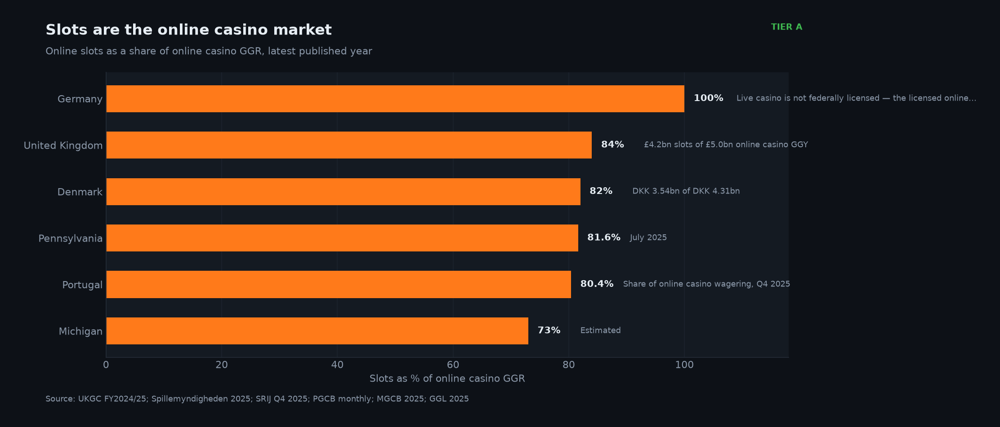
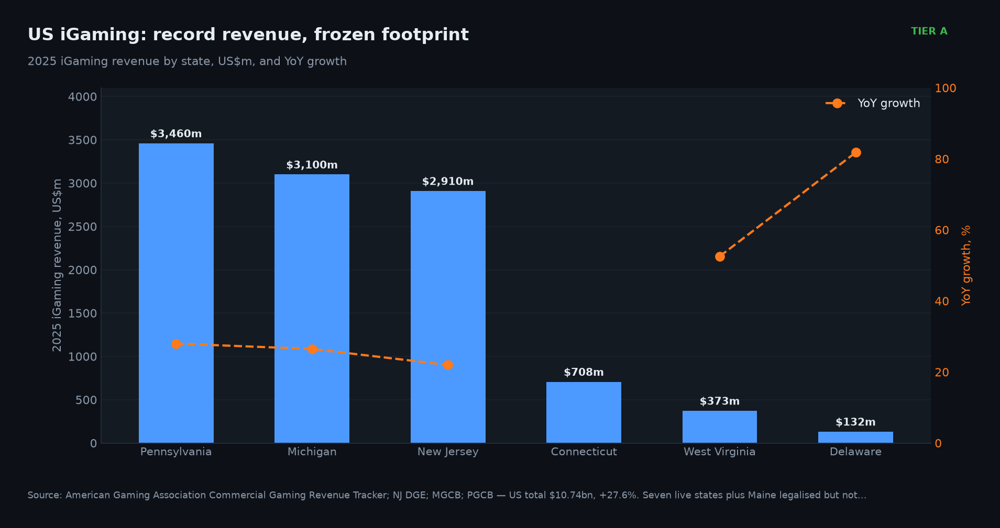
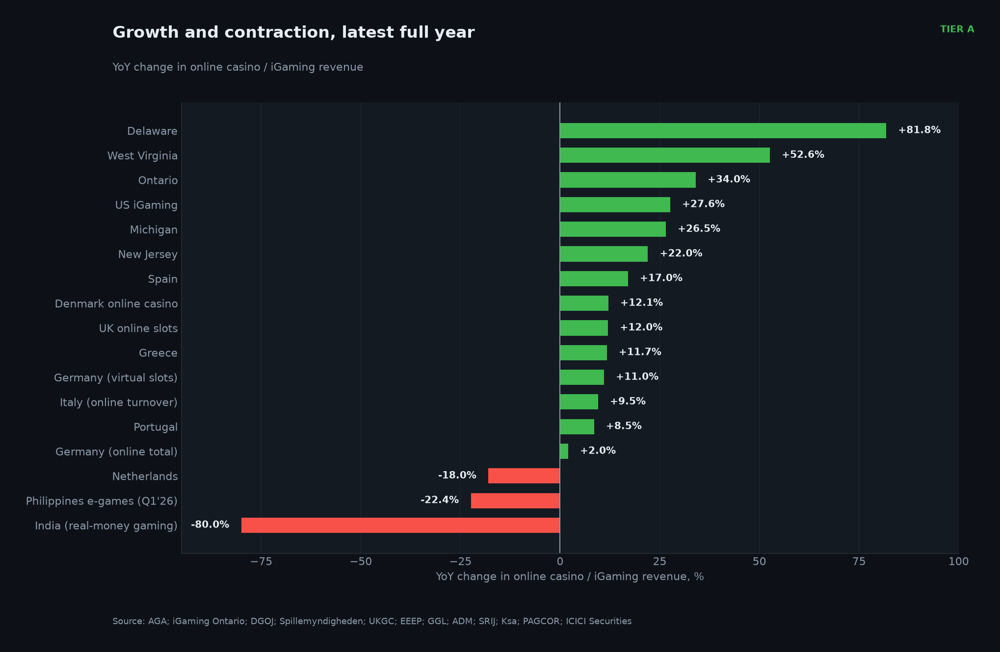
Two of these rates are levied on turnover rather than gross gaming revenue, which changes their meaning completely. Germany's 5.3% of stakes works out at roughly 40–55% of GGR depending on RTP, which is why 84 million Germans generate only €543m of licensed slot revenue. Mexico's 50% IEPS on wagers is arithmetically impossible to absorb at a 96% RTP, and should be expected to produce restructuring, non-compliance or offshore migration rather than revenue.
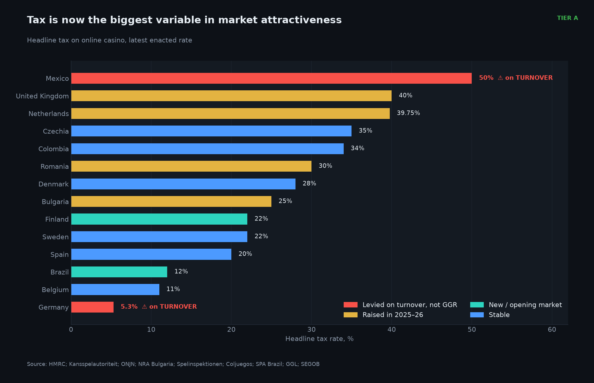
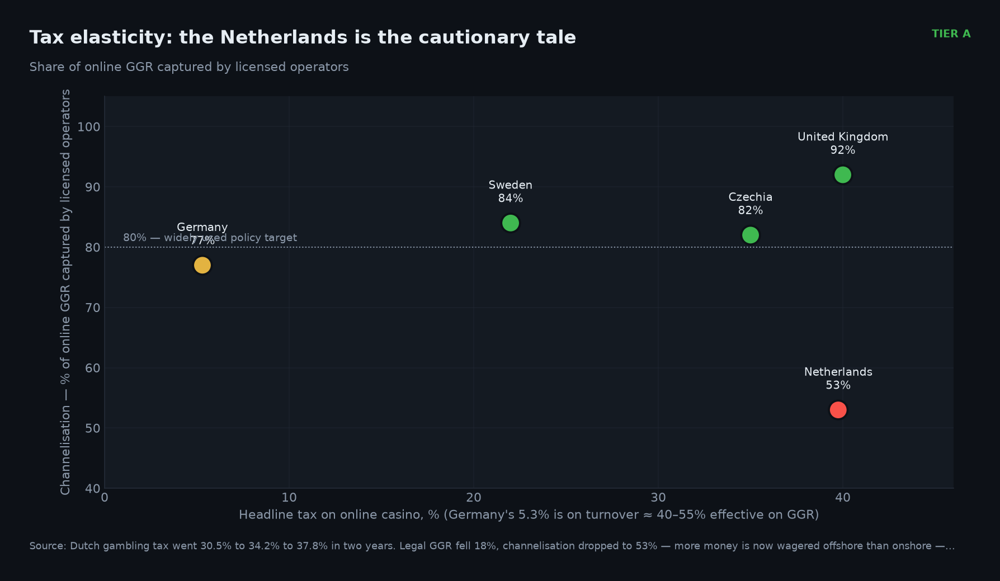
That chart is the whole industry in miniature. Slot GGY rose 12% year on year while spins per session, revenue per session and session length all fell. Growth came from a 6% larger active base, not from deeper engagement. With Remote Gaming Duty now at 40%, the lever operators are reaching for next is not engagement — it is RTP, which the mechanics section quantifies.
Pragmatic Play is the #1 supplier in Europe, South America and Africa, #2 in the Philippines, #3 in Canada and absent in the United States. That shape — dominant everywhere except the one market growing at 27.6% — is the strategic fact this report is built around.
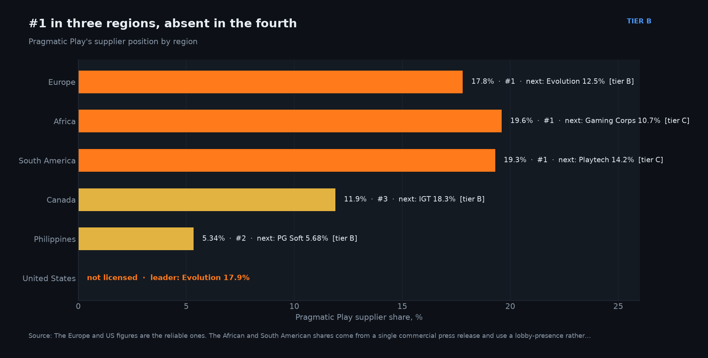
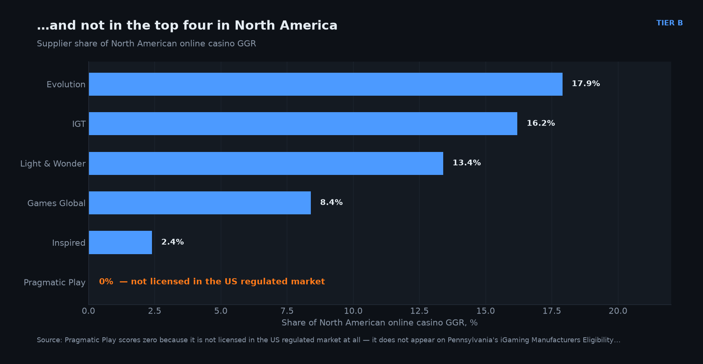
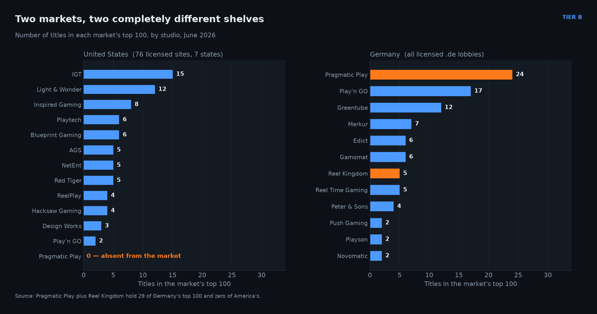
US licensing is slow and expensive by design — a Michigan supplier licence alone takes seven to nine months — but the more revealing signal is behavioural. In September 2025 Pragmatic Play became the first major supplier to quit the US sweepstakes vertical, days after the Los Angeles City Attorney named it alongside Evolution, Hacksaw, Nolimit City, Red Tiger, BTG and NetEnt in an action against Stake.us, and as California's AB 831 — which criminalises suppliers who knowingly support sweepstakes operators — headed for a Senate vote. In 2026 it began geo-blocking Dutch IPs on unlicensed casinos, removing roughly 29% of the top offshore slot inventory in that market overnight. Both moves point the same way: cleaning up distribution in order to buy a US licence. Whether that succeeds is the single most consequential open question in the slot supply market.
Roughly a third of world population lives where online casino cannot legally be supplied at all. France prohibits online casino outright and has no live legislative vehicle to change it, despite the ANJ estimating the illegal market at €800m–€1.5bn and growing, "mainly driven by illegal online casinos". Australia bans online slots under the Interactive Gambling Act. India's Promotion and Regulation of Online Gaming Act came into force on 1 May 2026 with no licensing pathway and no grandfathering, shrinking the domestic industry from roughly $6bn to $1bn. Japan, South Korea, China, Thailand, Indonesia and Vietnam all prohibit it. Norway and Poland run state monopolies.
Against that, three markets opened or are opening: Brazil produced BRL 37bn (~$7bn) of GGR in its first regulated year from 79 licensees, the best first year of any newly regulated market; Alberta went live on 13 July 2026 with 22 operators on day one and Pragmatic Play certified from the start; and Finland opens on 1 July 2027 with a 22% GGR tax and — importantly for suppliers — a rule that from 2028 licensed operators may only use software from Finnish-licensed suppliers.
There is no single authoritative GGR-share table for slot studios. What follows is four independent proxies — submitted GGR, lobby footprint, new-release quality scoring and demo-play demand. They disagree, because they measure different things. Read them together.
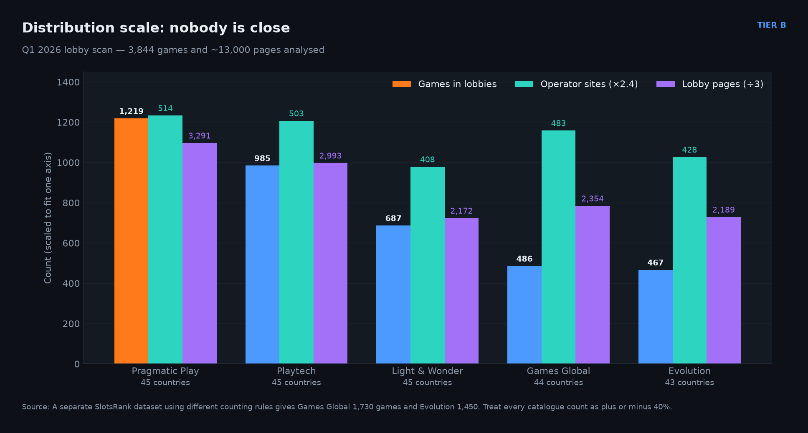
Pragmatic Play ships more new slots than anyone and has not produced a single gold-rated release in 2026. That is a deliberate and, so far, correct strategic choice — it holds 17.8% European GGR share while ELK Studios holds a fraction of that. The risk is structural rather than immediate: volume strategies decay when operators start curating lobbies instead of filling them, and UK tax pressure, Dutch lobby contraction and German product limits are all pushing exactly that way.
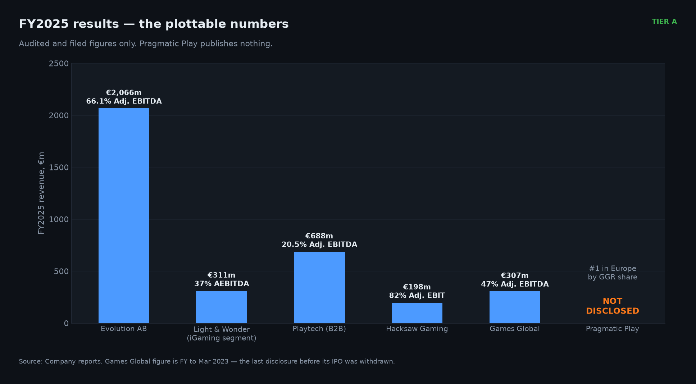
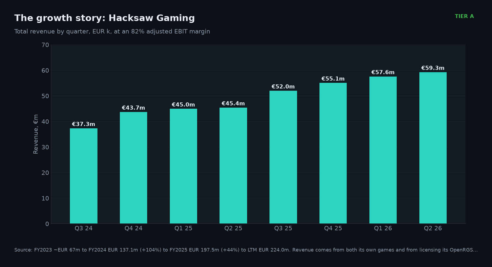
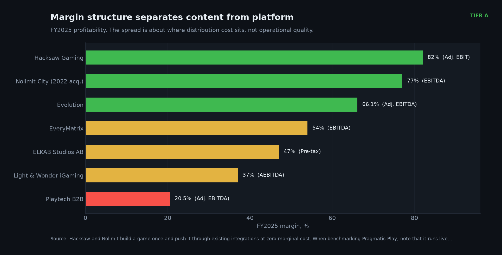
| Studio | Ownership | Portfolio | Cadence | Mechanical identity | Where it wins |
|---|---|---|---|---|---|
| Pragmatic Play + Reel Kingdom | Private; Veridian (Gibraltar) led; serviced by ARRISE | ~800 slots 1,219 titles | 8/month | Tumble + multiplier, Hold & Spin, Super Scatter, franchise sequels | Europe, LatAm, Africa — distribution and promo tooling |
| Evolution Group NetEnt, Red Tiger, BTG, Nolimit | Nasdaq Stockholm: EVO | 467 titles | 113 in 2025 | Megaways, Book-of legacy, daily jackpots, xMechanics | Live casino incumbency, US licensing, brand pull |
| Playtech | LSE: PTEC | 985 titles | Continuous | Fire Blaze jackpots, branded IP (Age of the Gods) | Tier-one operator placement — 503 sites |
| Light & Wonder incl. ELK Studios | ASX/NASDAQ: LNW | 687 titles | Continuous | Land-based IP ported online, Hold & Spin, jackpot links | North America — 12 of the US top 100 |
| Games Global | Private; IPO withdrawn 2024 | 1,300+ exclusive | ~60 variants/mo | Progressive jackpot networks, Area/Amazing Link | Canada and Ontario — the #1 title in both |
| Hacksaw Gaming | Nasdaq Stockholm: HACK | 293 titles | 4–5/month | Scratchcards, instant-win, high-volatility bonus buy | Streamers, crypto casinos, 82% margins |
| Nolimit City | Evolution (2022, up to €340m) | ~65 core | 12–15/year | xWays, xNudge, xSplit, xBomb — extreme volatility | Hardcore volatility segment; 179 avg release score |
| Play'n GO | Private, Swedish | ~400 titles | 56 in 2024 | Book-of mechanic, grid/cluster; no bonus buy, ever | Germany and the Netherlands — #1 title in both |
| PG Soft | Private | 200+ titles | Regular | Mobile-first HTML5, portrait play, ways + multiplier trails | Asia — beats Pragmatic in the Philippines |
| ELK Studios | Light & Wonder (2021) | ~60 titles | Low | X-iter bonus entry, CollectR meta-games (Pirots) | Highest per-release quality in the industry |
| Relax Gaming | Kindred → FDJ United (2024) | ~100–350 own ~4,000 aggregated | Moderate | Money Train persistence, Dream Drop jackpot | Dual model: own content plus a studio-incubation layer |
| Spribe | Private (Georgia) | Aviator + Turbo | Very low | Crash / social multiplayer with live cash-out feed | Owns a whole category Pragmatic does not compete in |
| Greentube / Novomatic | Novomatic AG | ~470 titles | 30+/year | Book of Ra expanding symbol, Cash Connection links | DACH and CEE land-to-online conversion |
| Jili / TaDa | IGS (Taiwan OTC: 3293) | 150–230+ each | 3–4/month | Fish-shooting, arcade slots, glocalised themes | Philippines, SE Asia, Brazil |
Portfolio counts are lobby-scan and company figures and vary by ±40% between sources. Ownership, cadence and mechanics are company-published C.
Distribution breadth and revenue performance are different measurements and they produce different league tables. Pragmatic Play wins the first outright. The second is genuinely contested, and in the United States it does not appear at all.
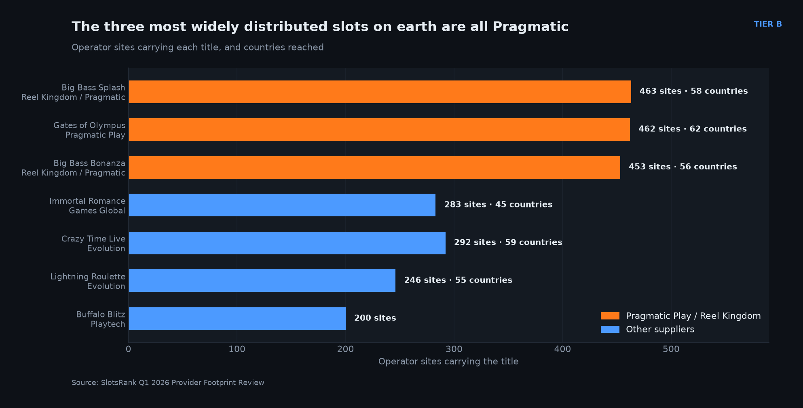
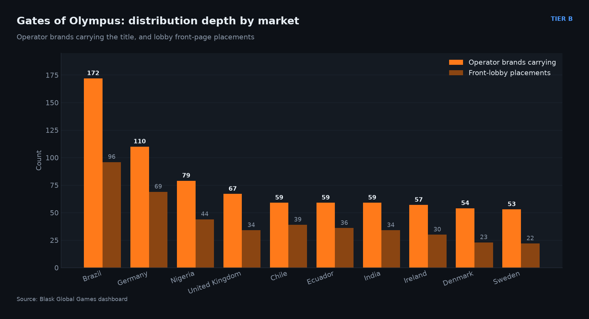
The affiliate web treats "top slots" as a global league table headed by Gates of Olympus and Sweet Bonanza. Operator revenue data says otherwise. bet365's own monthly rankings — the first time an operator has voluntarily published game performance at this granularity — show a different #1 slot in all ten published markets in June 2026. Gates of Olympus tops Brazil and nowhere else. Sweet Bonanza appears only at #5 in Canada and #5 in Brazil. In the UK, Germany, Spain, Michigan, New Jersey and Pennsylvania, no Pragmatic title reaches the top five at all.
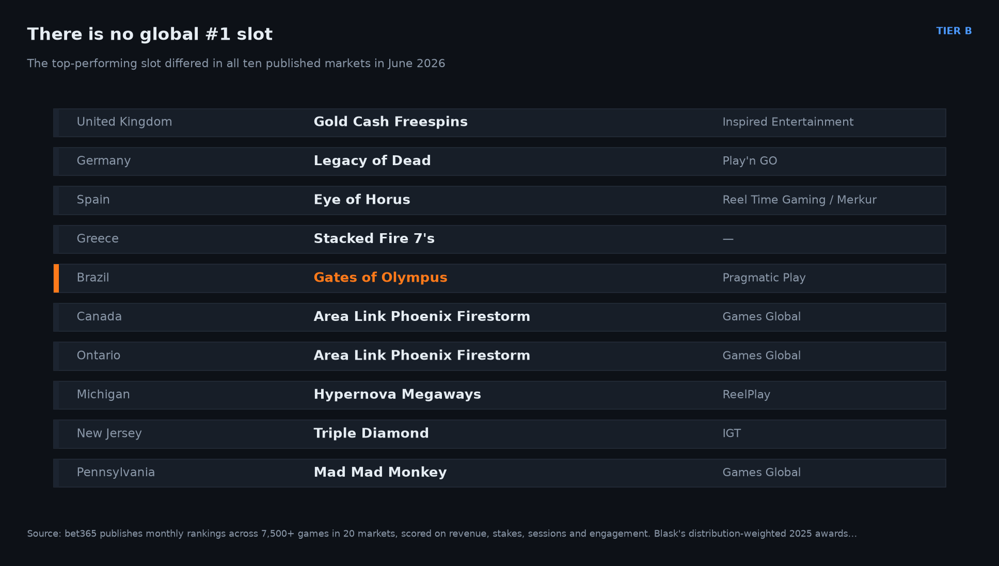
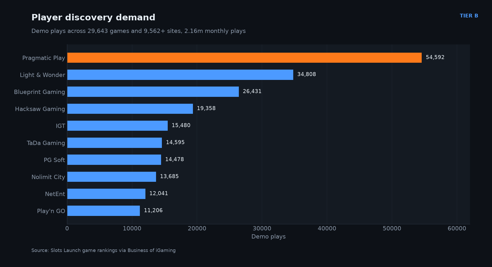
The innovation frontier moved. It is no longer new payline geometry — Megaways settled into infrastructure years ago. It is layering: persistence, collection and nested bonus states, plus a parallel land-grab in crash and instant formats that slots convert badly.
| Mechanic | Status | Owner / originator | Notes |
|---|---|---|---|
| Cash on Reels / money collect | Dominant | Generic; Big Bass popularised online | Named by Eilers & Krejcik as a top performance driver |
| Hold & Spin / Hold & Win | Dominant | Aristocrat (Lightning Link, 2014–15) | L&W paid Aristocrat $127.5m in Jan 2026 over hold-and-spin math |
| Perceived persistence | Dominant | Design principle, not owned | Sticky wilds, collection meters, upgrade ladders |
| Nested Hold & Spin | Fastest rising | — | A hold-and-spin inside a hold-and-spin |
| Multi-trigger jackpots / features | Fastest rising | — | Layered bonus complexity is the frontier |
| Megaways | Mature | Big Time Gaming (Evolution) | ~2% of titles, 100+ licensees, peak release year 2023 |
| xWays / xNudge / xBomb / xSplit | Niche, high value | Nolimit City (Evolution) | The only proprietary mechanic family with genuine brand equity |
| CollectR | Rising | ELK Studios | Pirots 1–5; payouts driven by collector behaviour, not paylines |
| Infinity Reels | Licensed out | ReelPlay | Winning combos append reels indefinitely |
| Crash | Category of its own | Spribe (Aviator) | #1 game outright in South Africa and Ghana; ~18% of Colombian online casino bets |
| Reel Overlay (slot × crash) | Experimental | Ready Play Gaming, 2026 | A crash cash-out layer running on top of a live video slot |
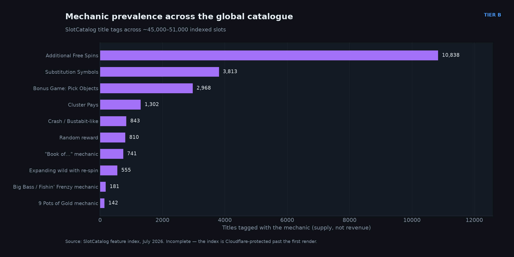
Pragmatic's ceiling sits an order of magnitude below Nolimit City's and Relax Gaming's. That is a deliberate mass-market choice rather than an oversight — extreme volatility is a small, loud segment — but it cedes the entire streamer economy, which is the highest-intent discovery channel in the category and which grew 39.5% in watch hours last year on 13% fewer streamers.
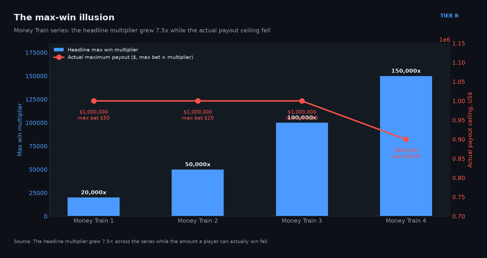
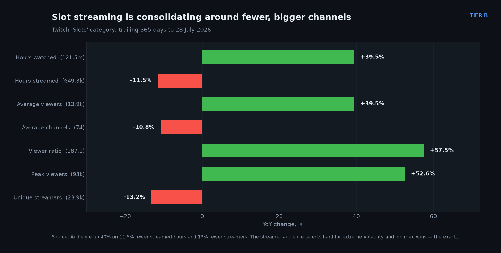
This is the most commercially significant product change of 2026 and it is a double-edged one for Pragmatic Play. Configurable RTP tiers (96.71 / 95.67 / 94.62 on Reel Kingdom titles, with 92% variants now deployed) are exactly what a UK operator absorbing a 19-point duty rise wants to buy. They are also what makes the flagship Big Bass franchise the most visibly degraded product on the UK shelf, in a market where RTP disclosure is mandatory and comparison sites publish deployment trackers.
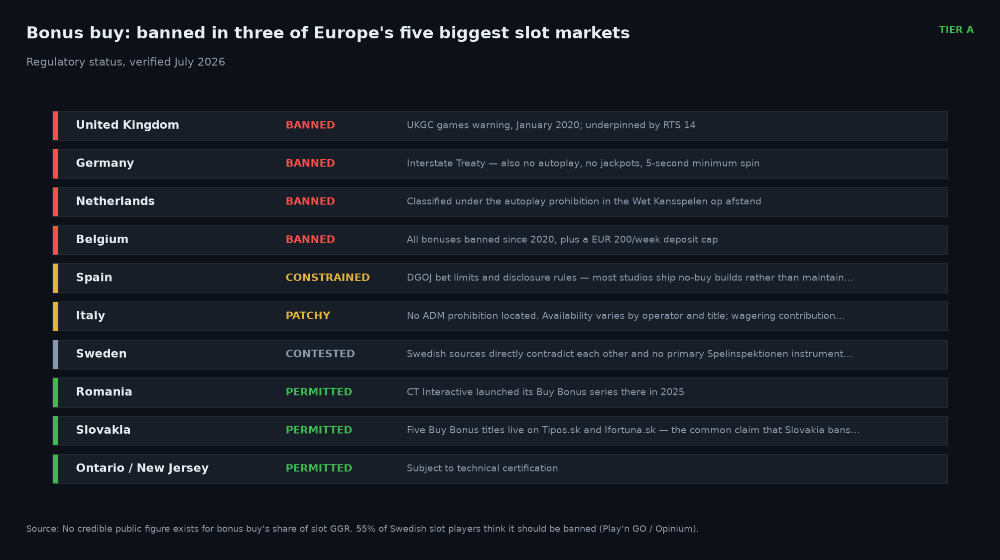
The circulating "bonus buy is 15–25% of slot revenue" has no named firm, no survey and no methodology behind it. It should not be published. What is verifiable: the first bonus-buy slot was Big Time Gaming's White Rabbit in 2017; typical buy cost is 50–200× stake with Pragmatic's "Super Buy" tier at 500×; buy-mode RTP is usually within ±2pp of base, so the difference is variance compression rather than expected value. And 55% of Swedish monthly slot players think it should be banned outright, with 63% believing they lose more than they win using it.
Play'n GO committed in 2021 never to build a bonus-buy game — "a decision that has cost us hundreds of millions of Swedish kronor" — and Book of Dead is still the #1 slot in Germany and the Netherlands without one.
Eight gaps, ranked by the size of the addressable opportunity being ceded. Severity is an analyst score — the evidence behind each row is cited, the 0–100 conversion is judgement.
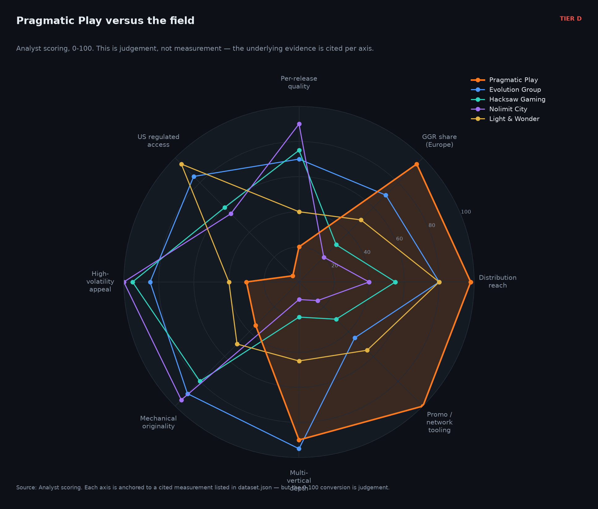
Every weakness listed here is the direct cost of a strategy that is currently winning. Eight releases a month is why Pragmatic occupies 3,291 lobby pages. Mass-market volatility is why it holds 17.8% of European GGR while Nolimit City — which makes objectively more interesting games — holds a rounding error. A €30m annual Drops & Wins prize pool across 60+ slots is a distribution weapon no boutique studio can answer. Franchise sequels are why three of the most widely distributed slots on earth are its own.
The question is not whether the strategy works. It plainly does. The question is whether it survives three simultaneous shifts: operators curating lobbies instead of filling them, regulators pricing supply-chain exposure directly, and the fastest-growing regulated market on earth being one it cannot currently sell into.
Until 2024 a content studio's regulatory exposure was essentially its operator customers' problem. That is no longer true in Ontario, Great Britain, Romania, Finland, California or the Netherlands. The model that made Pragmatic Play the most widely distributed studio on earth — maximum reach through aggregators and offshore operators — is precisely the model regulators have moved to make expensive.
The UK Gambling Commission opened a licence review of Evolution in December 2024 after finding five Evolution games on six unlicensed websites with large volumes of UK traffic. It concluded in July 2026 with a £4.75m settlement, a new licence condition mandating an independent audit within twelve months, and an explicit statement that the Commission had considered suspending the licence. Its Director of Enforcement framed the case as illustrative rather than isolated: the Commission "will continue to proactively monitor and test the market to identify licensed products being made available through illegal operators."
Pragmatic Play holds a UK licence and its content is far more widely distributed on offshore and crypto sites than Evolution's — it is the headline slot supplier to Stake.com, whose 2024 GGR is estimated at $4.7bn. No UKGC action against Pragmatic Play was found in this research. The Evolution settlement is the clearest available read on what that risk is worth.
Crypto casinos are the largest unmeasured pool in the industry and the estimates are not reliable: the widely cited $81.4bn category figure would make crypto casinos larger than the entire regulated global online casino market, while a conservative methodology gives $9–14bn for the same period. Neither has been audited. What is not in dispute is the supplier roster. Stake.com carries Pragmatic Play, Evolution, Hacksaw, Nolimit City, NetEnt, Play'n GO, Big Time Gaming, Push, Relax, Red Tiger and Thunderkick — the same studios that supply regulated Europe. Curaçao's LOK reform abolished the master/sub-licence system on 1 January 2025 and now publishes a register of 623 direct licences, which makes that exposure visible to regulators in a way it previously was not.
Every figure in this report carries a tier. Tier D figures are analyst judgement and are labelled as such wherever they appear. Nothing here is invented to fill a gap.
Click any chart to enlarge. Every one is regenerated from
data/dataset.json by
generate_charts.py.